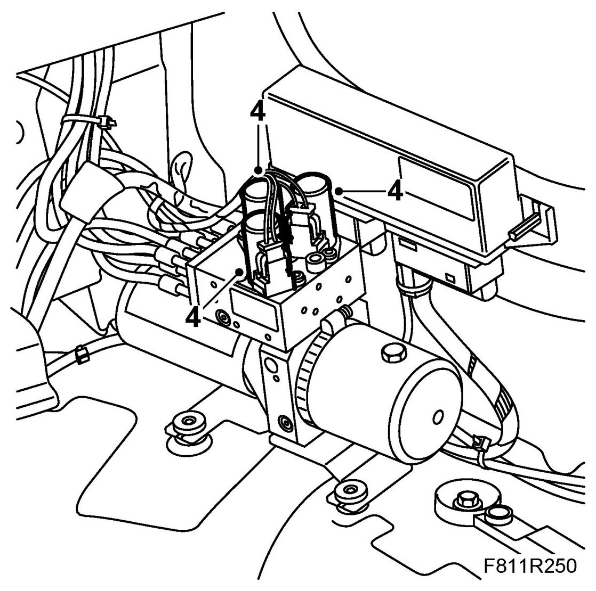
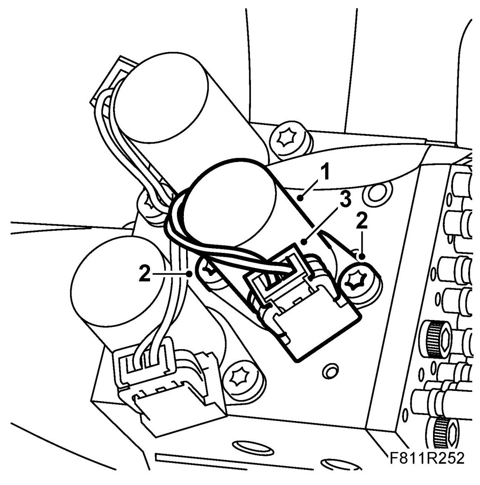

Solenoid Valve (647a/b/c)
Solenoid Valve (647a/b/c)
To remove
1. Raise the soft top fully.
2. Remove Luggage compartment side trim, CV on the right hand side.
3. Make sure the spare part is at hand before dismantling (to prevent oil leaking unnecessarily).
4. The hydraulic unit has three solenoid valves.

5. Unplug the connector for the valve to be changed.
IMPORTANT: The hydraulic valve connectors have the following colours: Blue, green and orange. The top of the valve housing is marked for the respective colour: "B" for blue, "G" for green and "O" for orange.
6. Place some paper under the hydraulic unit to catch any hydraulic fluid that may run out.
7. Wipe clean around the unit with some paper.
8. Remove the bolts securing the valve to be changed.
NOTE: If the "green" valve is being changed: Undo the bolts on the "orange" valve and turn it slightly to access the bolt for the "green" valve.
9. Withdraw the valve from the hydraulic unit.
To fit
1. Place the valve in position for fitting.

2. Fit and tighten the bolts securing the valve.
NOTE: If the "green" valve has been changed: Turn back the "orange" valve and tighten the bolts.
3. Plug in the valve's connector.
IMPORTANT: The hydraulic valve connectors have the following colours: Blue, green and orange. The top of the valve housing is marked for the respective colour: "B" for blue, "G" for green and "O" for orange.
4. Open and close the soft top for 5 complete cycles to bleed the system and check its function.
5. Check for any fluid leaks.
6. Check the oil level and top up as necessary. See Checking/filling oil. Use 89 96 860 Power steering fluid.
7. Connect the diagnostics tool and erase any diagnostic trouble code.
8. Fit Luggage compartment side trim .